COMMUNICATION ENGINEERING LAB
Course Code: EC255
PROJECT REPORT
In Electronics and
Communication Engineering
Submitted by
Nivedita Kashyap (21ECE1023)
Paras Kore (21ECE1024)
Pratham Gupta (21ECE1025)
Pratyush Gadge (21ECE1026)
Ravi
Ghutiya (21ECE1027)
Rhea Billava (21ECE1028)
To
Dr. Anirban
Chatterjee
Associate Professor at NIT Goa
Contribution
-
21ECE1023: Compiling snapshots, generating circuit model on
Tinkercad Autodesk and designing block diagram on paint.
-
21ECE1024: Implementation of detector Circuit in Hardware.
-
21ECE1025: Designing the Detector circuit on LTspice Simulator.
-
21ECE1026: PCB designing of the implemented Circuit on Altium Designer.
-
21ECE1027: Designing of low pass filter for the demodulated wave.
-
21ECE1028:
Documentation of the project report.
|
Sr no.
|
Contents
|
Pg
No.
|
|
1
|
ABSTRACT
|
4
|
|
2
|
INTRODUCTION
|
5 - 7
|
|
3
|
HARDWARE DESCRIPTION
|
8 -
10
|
|
4
|
CIRCUIT DIAGRAM
|
11 -
15
|
|
5
|
WORKING PRINCIPLE
|
16
|
|
6
|
SNAPS OF THE OUTPUT
|
17
|
|
7
|
RESULT AND OBSERVATION
|
18
|
|
8
|
APPLICATION
|
19
|
|
9
|
Advantages &
Disadvantages
|
20 -
21
|
|
10
|
CONCLUSION
|
22
|
RF DEMODULATOR / DETECTOR
ABSTRACT:
The
project is called the RADIO FREQUENCY DETECTOR. In this project, we have designed a demodulator circuit for
Amplitude modulated waves in general. We have made some modifications to the first-order envelope detector and
designed a second-order envelope detector whose efficiency is better than the preceding method.
It applies the
second-order envelope detector approach, which produces the original signal's demodulated envelope as an
output from a high-frequency amplitude-modulated input. After that, a second-order low-pass filter was used to
reduce ripple. We obtained the demodulated wave we sought due to the filtering operation.
The hardware for the
circuit was created using resistors, capacitors, and diodes on a breadboard after the circuit was first realized
using LT SPICE, and the output waveform was obtained. The range of the output waveform has been examined. it
operates within a range
of
500 Hz to 20K Hz. Finally, we improved the hardware's current carrying capacity by designing it on a PCB.
INTRODUCTION:
Radio Frequency (RF) refers to a range of frequencies in the electromagnetic spectrum between 3
kHz to 300 GHz. RF signals are used for wireless communication and are used for a wide range of applications
including radio and television broadcasting, mobile phones, satellite communications, Wi-Fi networks,
Bluetooth, and GPS.
The
properties of RF signals, such as their frequency, wavelength, amplitude, and phase, make them suitable for
long-distance communication as they can travel through the air and penetrate obstacles such as buildings and
trees. However, RF signals can also be affected by factors such as interference, noise, attenuation, and
multipath propagation, which can degrade the quality of the communication.
RF signals
are generated by electronic devices such as transmitters, which convert electrical signals into RF signals and
emit them through antennas. RF signals are received by receivers, which convert them back into electrical
signals for processing.
RF technology
has revolutionized how we communicate and enabled wireless communication to become an integral part of our daily
lives.
Frequency Detector:
A frequency
detector is an electronic device used to measure the frequency of a periodic waveform, such as a signal or a
sound wave. Frequency detectors are used in a variety of applications, including audio
and music
processing, telecommunications, signal analysis, and scientific research.
Frequency
detectors typically work by measuring the period of the input waveform and using it to calculate the frequency.
They may also use other methods, such as counting the number of cycles over a specific period or analyzing the
waveform's spectral content.
There are
different types of frequency detectors available, including analog and digital versions. Analog frequency
detectors usually use a filter or a resonant circuit to select the frequency of interest, while digital
frequency detectors use techniques such as Fourier analysis or phase detection.
Frequency
detectors are used in many applications, such as in musical instruments to detect and measure the pitch of a
note, in radio receivers to tune to a specific frequency, and in signal processing to analyze and filter signals
based on their frequency content. In telecommunications, frequency detectors are used to measure the frequency
of radio waves and to detect and analyze the modulation of signals.
Radio Frequency Detector:
A radio
frequency (RF) detector is an electronic device used to detect and measure the presence and strength of RF
signals in the environment. RF signals are emitted by various electronic devices, such as mobile phones,
wireless routers, Wi-Fi networks, and other electronic devices that emit electromagnetic radiation.
An RF
detector typically consists of an antenna, a signal amplifier, and a detector circuit. The antenna is used to
pick up RF signals in the environment, and the signal amplifier amplifies the weak signals to a detectable
level. The detector circuit is used to detect the presence and strength of the RF signals.
Detecting
radio frequency (RF) requires specialized equipment designed for that purpose. Here are some common methods for
detecting radio frequency:
-
Spectrum analyzer: This is a device that is used to measure the frequency spectrum of RF
signals. It displays the signal strength versus frequency on a graphical display, allowing you to
identify the specific frequency or frequencies of the RF signal.
-
Antenna: An antenna can be used to detect RF signals. Different types of antennas are
designed to detect different frequencies. By connecting an antenna to a receiver, you can detect RF
signals and measure their strength.
-
Radio receiver: A radio receiver is a device that can receive and demodulate RF signals.
By tuning the receiver to the frequency of the RF signal, you can detect the signal and listen to
the audio or data carried by the signal.
The method we
have used to detect Radio Frequency is Second Order Envelope Detector / Demodulator
List of Components:
HARDWARE
|
Sr.No
|
Components
|
Value
|
Qty
|
|
1
|
Diode
|
1N34
|
2
|
|
2
|
Capacitor
|
10n
|
3
|
|
3
|
Resistor
|
1k, 22k
|
2
|
|
4
|
Terminal Block
|
-
|
2
|
Table 1: Component
and Quantity used
Components
Description
Resistors:
A resistor is
a passive electronic component that opposes the flow of electrical current in a circuit. It is designed to have
a specific resistance value, measured in ohms (Ω), and is used to control the amount of current
flowing
through a circuit or to divide voltage in a circuit or it is a two-terminal electronic component that produces a
voltage across its terminals that is proportional to the electric current through it in accordance with
Ohm's law:
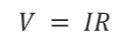
22K ohm
| 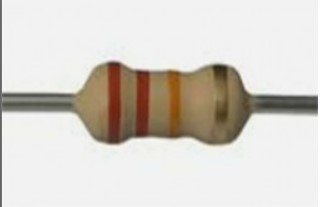
10K Ohm
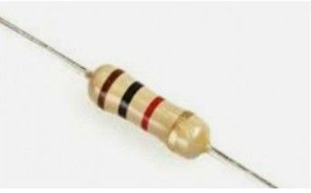
Fig 1: Resistors
Capacitors:
A capacitor is
a passive electronic component that stores electrical energy in an electric field between two conductive plates.
It is designed to have a specific capacitance value, measured in farads (F), and is used in electronic circuits
for a variety of purposes, including energy storage, signal filtering, and timing.
10n F
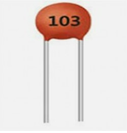
Fig 2: Capacitor
Diodes:
A
diode is an electronic component that allows current to flow in only one direction. It has two terminals, the
anode and the cathode, which are polarized in such a way that current can only flow from the anode to the
cathode. When a voltage is applied across the diode in the forward direction, the diode conducts and allows
current to flow. In contrast, in the reverse direction, the diode blocks the current flow
1N34
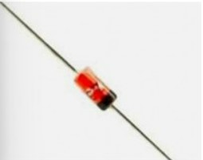
Fig 3: Diode
CIRCUIT DIAGRAM:
The
circuit we have designed demodulates message signal whose frequency lies in the range of 500Hz to 20K Hz. We can
use this circuit whenever we want to obtain the demodulated waveform. We can use this circuit to quickly get the
demodulated waveform of an Amplitude modulated wave. Also, the device we have designed is small in size, so we
can easily carry it from one place to another. Also since the circuit we have designed is passive in nature, we
don't have to connect a separate power supply to it.
Block Diagram:
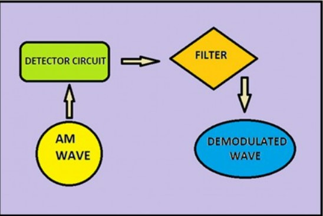
Fig 4: Block Diagram of RF Detector
Component Layout on
Breadboard:
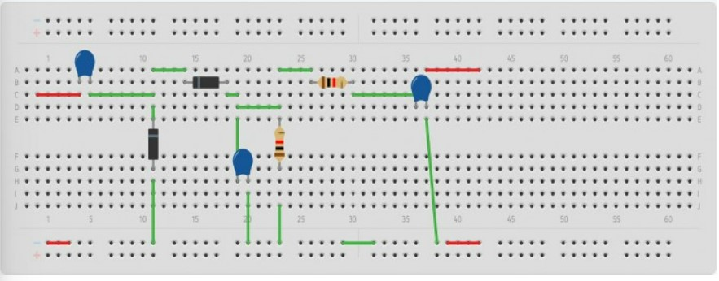
Fig 5: Component
layout on Breadboard
Component Layout of the PCB:

Fig 6: Component
Layout on PCB - 1
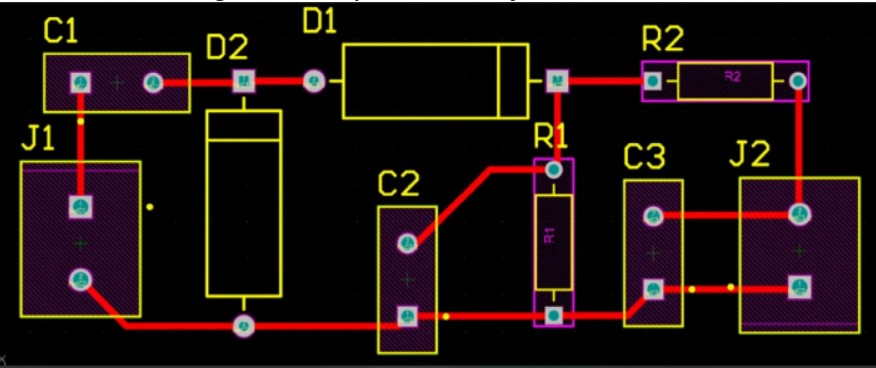
Fig 7: Component
Layout on PCB - 2
LTspice Circuit:
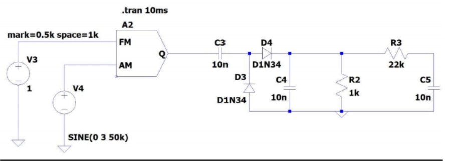
Fig 8: Circuit on
LTspice Simulator
Final Circuit:
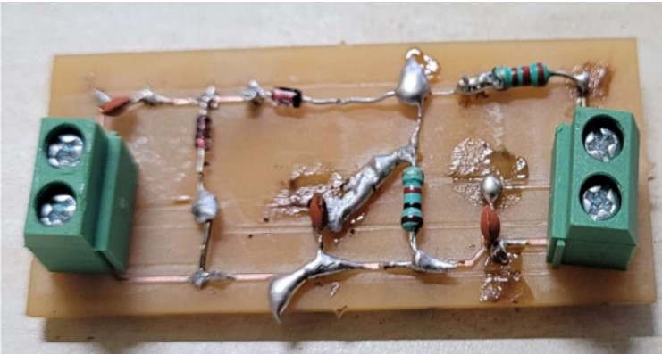
Fig 9: Circuit prototype-1
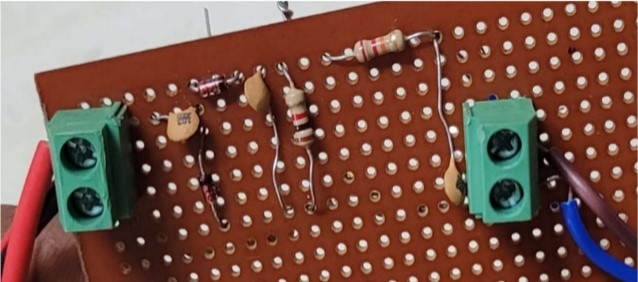
Fig 10: Circuit
prototype-2
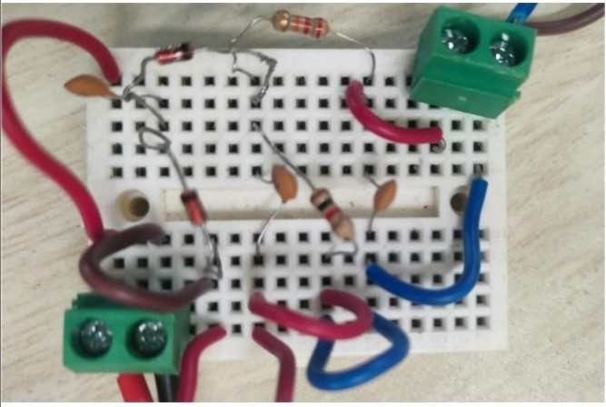
Fig 11: Circuit
prototype-3
15
WORKING PRINCIPLE:
The working principle of an RF detector is based on the rectification of the RF signal using a diode and the
filtering of the rectified signal to extract the information signal.
When an RF signal is applied to a diode, it rectifies the signal, producing a DC voltage proportional to the
amplitude of the RF signal. This rectification process creates an envelope signal that has the same shape as the
original RF signal but is at a much lower frequency.
02It works similarly to an RF peak-to-peak detector, As the RF voltage in the input falls, it eventually turns
on the diode(D2) which builds up the voltage across the capacitor(C1) which turns the other diode(D100) ON and
then transfers the charge to capacitor(C2). This process continues until the capacitor charges up until it
reaches a value close to the peak-to-peak RF Amplitude. Resistor(R1) is used to pull the charge off the
capacitor. It is also to be noted that the charging time constant has to be greater than that of the discharging
time constant.
The rectified RF signal is then filtered to remove the high-frequency RF component and retain only the
lower-frequency envelope signal. This filtering can be achieved using a low-pass filter, which allows only the
low-frequency components to pass through while attenuating the high-frequency components.
The resulting output is the envelope signal, which contains the original information carried by the RF signal.
The envelope signal can be further processed to recover the original information using demodulation techniques
appropriate for the type of modulation used in the RF signal.
Snaps of the output:
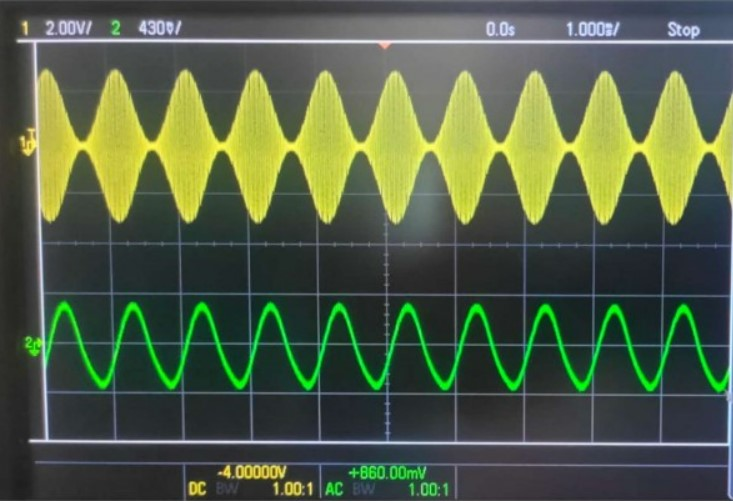
Fig 12: Output
waveform as observed on DSO
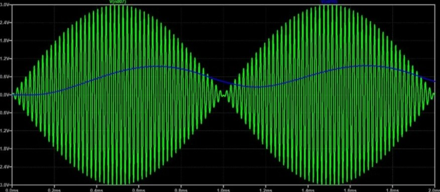
Fig 13: Output
waveform observed on LTspice simulator
RESULT and
OBSERVATION:
It
is observed that the detector functions efficiently in the range of 500Hz to 20K Hz(maximum upper limit of
function generator). As we move further away from the range, we observe ripples getting introduced within the
output waveform as we move beyond this range. As we move to higher frequencies we also observe that the output
waveform gets further and further deamplified.
When we try to
demodulate Amplitude modulated wave with message frequency less than 500 Hz we observe non horizontal clipping.
We can further improve the detector by connecting variable resistor and variable capacitor so we can vary it in
response to the message signal.
Applications:
-
Tuning or adjusting IF
stages during alignment
-
Filter response
-
Peaking RF circuits
-
Examining amplitude
modulation characteristics.
-
Wireless communication systems: In these systems, RF detectors are used to monitor the
strength of the RF signal being transmitted and received by the system. This information is then
used to adjust the power of the transmitter and optimize the performance of the system.
-
Radio astronomy: Radio telescopes use RF detectors to measure
the strength and frequency of the RF signals emitted by celestial bodies. This information is used
to study the properties of stars, galaxies, and other celestial objects.
-
Radar
systems: where they are used to detect and measure the strength of the RF signals
reflected by objects in the radar's field of view. This information is used to determine the
location and velocity of objects and is used in applications such as air traffic control, weather
monitoring, and military surveillance.
-
Radio broadcasting: RF demodulators are used to extract the
audio signal from a modulated radio frequency carrier wave in radio broadcasting systems.
-
Telecommunications: RF demodulators are used in various telecommunications
applications to recover the original signal from a modulated carrier wave, such as in satellite
communications, mobile phone networks, and digital TV.
Advantages:
-
Safety: RF detectors can help identify sources of potentially harmful RF radiation, which can be useful
in ensuring safety in various environments.
-
Security: RF detectors
can be used to detect the presence of hidden surveillance devices, such as hidden cameras or
microphones, which can be useful in maintaining privacy and security.
-
Convenience: RF
detectors are often small and portable, which makes them convenient to use and carry around.
-
Cost-effective: RF
detectors are relatively inexpensive and can be a cost-effective solution for detecting RF signals.
-
Easy to use: RF
detectors are usually easy to use, requiring little to no technical expertise or training to operate.
The advantages of an RF
demodulator include:
-
Compatibility: RF demodulators can be used to demodulate a wide range of RF signals, including those
used for radio broadcasts, TV broadcasts, and cable TV.
-
Simplicity: RF
demodulators are relatively simple devices, requiring only a few components to perform the demodulation
process. This makes them easy to design and manufacture.
-
Low cost: Because of
their simplicity, RF demodulators are relatively inexpensive to produce. This makes them a
cost-effective solution for demodulating RF signals.
-
Reliability: RF
demodulators are typically very reliable, with few components that can fail or require maintenance.
-
Signal quality: RF
demodulators can produce high-quality audio and video signals, with good signal-to-noise ratios and low
distortion.
-
Versatility: RF
demodulators can be used with a variety of output devices, including speakers, televisions, and computer
monitors.
Limitations:
-
Limited frequency range: RF demodulators can only demodulate signals within a certain frequency range.
-
Interference: RF
demodulators can be susceptible to interference from other RF signals or electromagnetic interference,
which can degrade the quality of the demodulated signal.
-
Compatibility: While
RF demodulators are generally compatible with a wide range of signals, some signals may require
additional processing or specialized demodulation techniques.
-
Signal loss: RF
demodulators can experience a signal loss due to cable attenuation, which can reduce the strength of the
demodulated signal.
-
Complexity: While RF
demodulators are relatively simple devices, more advanced demodulation techniques can be complex and
require specialized knowledge and equipment.
-
Noise: One of the
main limitations of RF demodulators is noise. RF signals are often very weak and can be easily degraded
by noise. This can result in a poor signal-to-noise ratio (SNR), which can make it difficult to
accurately demodulate the signal.
-
Nonlinear
distortion: RF demodulators can also be affected by nonlinear distortion. This occurs when the
demodulator is not able to accurately reproduce the original signal due to the nonlinear characteristics
of the demodulator.
-
Frequency response:
The frequency response of an RF demodulator is another limitation. RF signals can have a wide range of
frequencies, and a demodulator must be able to accurately extract the original signal across this entire
frequency range.
-
Multipath
distortion: In some cases, RF signals can be reflected or refracted by objects in the environment,
resulting in multipath distortion. This can cause the demodulator to receive multiple versions of the
same signal, which can make it difficult to accurately extract the original signal.
Conclusion:
We have
successfully designed an RF detector circuit which demodulates signals in the range of 500Hz to 20K Hz. The
special feature of our detector is that it doesn’t require the use of the battery to power it on, It operates on
the voltage of the modulated signal which we feed to it in order to obtain the demodulated waveform. Also, we
have designed a compact circuit, hence we can carry it along with us as well, so whenever we need to demodulate
a signal we can just connect it to the circuit
References:
www.google.com www.wikipedia.org
www.ti.com
|